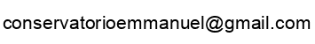

Todos los estudiantes deben proveer a CONSERVATORIO DE MUSICA EMMANUEL una dirección de envío de correo donde recibirá notificaciones importantes.
Así mismo un numero de WhatsApp habilitado
Todos los cambios en la dirección de envío deben ser reportados a 
Se dará por recibida cualquier notificación por correo electrónico, que se envíe a cada estudiante.
El estudiante es responsable de tener los medios tecnológicos (Computadora, celular, Tablet, internet, software, hardware etc.) necesarios para poder establecer su conexión con los maestros en tiempo y forma establecida para el curso seleccionado.
Cualquier situación que pueda surgir con respecto a decisiones del conservatorio que puedan requerir una consideración especial, o quejas acerca del comportamiento de miembros del profesorado o personal de CONSERVATORIO DE MUSICA EMMANUEL podrá ser reportada directamente a
CONSERVATORIO DE MUSICA EMMANUEL no tolera ni propicia ningún acto discriminatorio en el ámbito académico
C.M.E. es un lugar que valora la integridad académica, y las prácticas profesionales así como el uso adecuado de la tecnología.
Se espera que los estudiantes de C.M.E. mantengan los estándares más altos de honestidad y de profesionalidad durante sus estudios en el mismo.
Cualquier evidencia de comportamientos que vayan en contra de las políticas de transparencia académica será analizada, y el/los estudiantes responsables podrán ser sujetos a consecuencias disciplinarias como, expulsión del curso, suspensión temporal, o expulsión definitiva del curso.
Se identificará como fraude: el uso de información personal falsa, cualquier falsificación de documentos oficiales del conservatorio, omisión de información requerida o hacerse pasar por un tercero.
También se identificará como fraude cualquier tipo de ayuda no permitida, copias del trabajo de terceros, y obtención de información de manera deshonesta en caso de evaluaciones, tareas, etc
En caso de fraude, el alumno podrá recibir sanciones disciplinarias por parte del conservatorio
Se identificará como plagio: la acción de copiar sustancialmente obras ajenas dándolas como propias. En caso de plagio, el alumno podrá recibir sanciones disciplinarias por parte del conservatorio.
Comunicación ofensiva: Cualquier uso de lenguaje vulgar, abusivo, u odioso está prohibido.
Acoso: Dirigirse a otra persona con el fin de causar angustia, humillación, injuria, atención indeseada, u otro tipo de incomodidad, queda prohibido.
Otros tipos de ataques personales con el fin de amenazar, intimidar o humillar un individuo, grupo u organización, como ataques en base a raza, origen étnico discapacidad, religión, género, orientación sexual, entre otras características personales, quedan prohibidos.
Archivos Gráficos Ofensivos: transmitir o publicar dentro de cualquier sitio de la página, imágenes u otros contenidos explícitos queda prohibido.
Personificación: No están permitidas las comunicaciones hechas a través de un nombre falso
Cadenas de mensajes y Ofrecimientos comerciales: Queda prohibida la distribución de cadenas de mensajes y ofrecimientos comerciales de cualquier tipo como, entre otros, marketing multinivel, productos personales o servicios externos a C.M.E.
El incumplimiento de esta norma acarreará sanciones disciplinarias y legales.
El incumplimiento de las políticas de comportamiento ofensivo de C.M.E. acarreará sanciones disciplinarias y legales correspondientes.
Uso no permitido del nombre de CONSERVATORIO DE MUSICA EMMANUEL o C.M.E.
Los estudiantes no pueden, bajo ninguna circunstancia, sin el consentimiento previo otorgado por escrito del conservatorio, usar el nombre CONSERVATORIO DE MUSICA EMMANUEL o C.M.E. en ninguna forma o usar cualquier signo distintivo o creación sujeta a la propiedad intelectual del conservatorio así como: símbolo, logotipo o gráfico utilizado o asociado con C.M.E. sólo, o cualquier nombre, símbolo logotipo o gráfico confusamente similar al nombre, símbolos, logotipo o gráficos de C.M.E, como parte de una dirección de correo electrónico, una “página de inicio” o un nombre de dominio para cualquier red en línea que un estudiante utilice, origine o registre con Internet o una autoridad similar.
El uso no autorizado del nombre ” CONSERVATORIO DE MUSICA EMMANUEL o C.M.E.”, o cualquier símbolo, logotipo o gráfico utilizado por el conservatorio o asociado con el la misma o cualquier otro confusamente similar al mismo, es una violación de las políticas de la escuela y está sujeto a sanciones.
C.M.E. se compromete a tomar las medidas de seguridad que se encuentren a su alcance para que los estudiantes no sean víctimas de fraude bancario y los estudiantes se comprometen a tener todas las medidas de seguridad digital recomendadas por los bancos. El conservatorio no podrá hacerse responsable por los actos fraudulentos y delictivos de terceros en este ámbito.